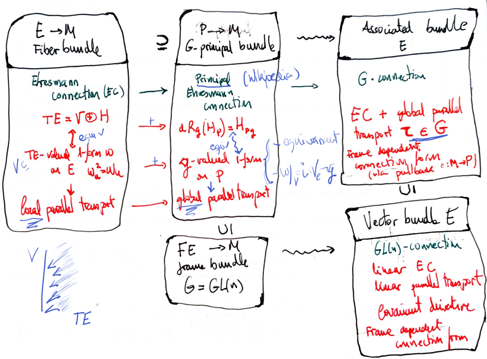

A connection on a fiber bundle $E$ is nothing but a choice of an horizontal subspace of $TE$.
If the bundle is a principal bundle and we require more properties then we have better properties, like global parallel transport. And the associated bundles inherit the connection (horizontal spaces), the so called associated connection.
If the chosen principal bundle were the frame bundle $FM$, then the connection inherited by $TM$ would be a covariant derivative operator or linear connection in the "low level sense", that is, a vector bundle connection. This can be understood in terms of a Cartan connection: see this note.
What we have is a decomposition
$$ T(TM)=V\oplus H $$Think of $TM$ as pairs $(p,v)$ of points of $M$ and tangent vectors in $T_p M$. The vertical vectors ($V$) "are" curves starting in some $(p_0,v_0)$ which are stuck in the same point $p_0$, changing the $v$s. And the horizontal ones (H) "are" curves in $TM$ that represent what choice of $v$s do I have to do when I leave from $p_0$ in order to be considered that such $v$ is the same as $v_0$.
Author: Antonio J. Pan-Collantes
INDEX: